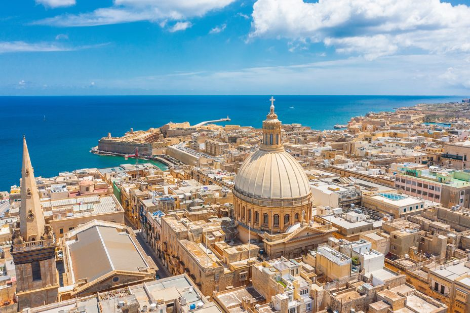

An ideal destination for those who crave exhileration with their travel. The ancient ruin is home to constant lightning storms that illuminate the sky with an amalgam of beautiful colours. Not many places can combine beauty and danger the way Zapdosra does.
Cost of stay is approximately 755 Yen per day.
ATTRACTIONS: LAKE LIGHTNING, CITY OF FIRE, FORBIDDEN FOREST.
Local food is of a spicy nature.
ARTICUNOX

This magnificent city was built in the year 3555. It is appealing to travellers who greatly value art and culture; and beneath the surrounding waters is the home of the ocean Gods, the great city of Atlantis. And if one is lucky they may discover the Fountain of Youth, which grants immortality.
Cost of stay is no less than 50,000 Euros per day.
ATTRACTIONS: SUN WARRIOR TEMPLE, THE MUSEUM OF DESTINY, FOUNTAIN OF YOUTH.
The local cuisine is primarily seafood, including the world-renowned 5 flavoured lobster.
DRAZAGON
Home to the highest mountain peak on planet Krypton, Drazagon is the ultimate destination for souls who wish to observe the heavens. The hilltop destination is a thrilling environment that displays the constellations as though one were in space. Visit the peak at the right time and you might even find yourself in flight atop a dragon.
Cost of stay is 15000 Rupees per day.
ATTRACTIONS: DRAZAGON MOUNTAIN, THE PEAK OF MISTS, LAVENDER TOWER
The highlight of the local cuisine is dessert including the most delicious vanilla ice cream on the planet